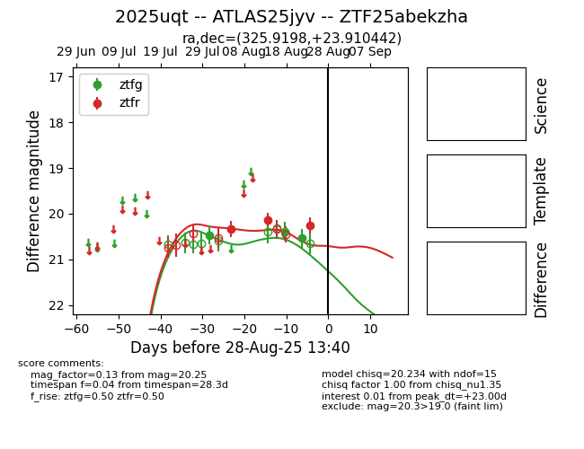

Target 2025uqt at 2025-08-26 10:53, see:
FINK: fink-portal.org/ZTF25abekzha
Lasair: lasair-ztf.lsst.ac.uk/objects/ZTF25abekzha
ALeRCE: alerce.online/object/ZTF25abekzha
TNS: wis-tns.org/object/2025uqt
YSE: ziggy.ucolick.org/yse/transient_detail/2025uqt
alt names
ZTF25abekzha (ztf,fink)
2025uqt (tns,yse)
ATLAS25jyv (atlas)
coordinates:
equatorial (ra, dec) = (325.9198,+23.91044)
galactic (l, b) = (76.9460,-21.75833)
photometry
last ztfg=20.54, ztfr=20.25
3 ztfg, 3 ztfr detections
